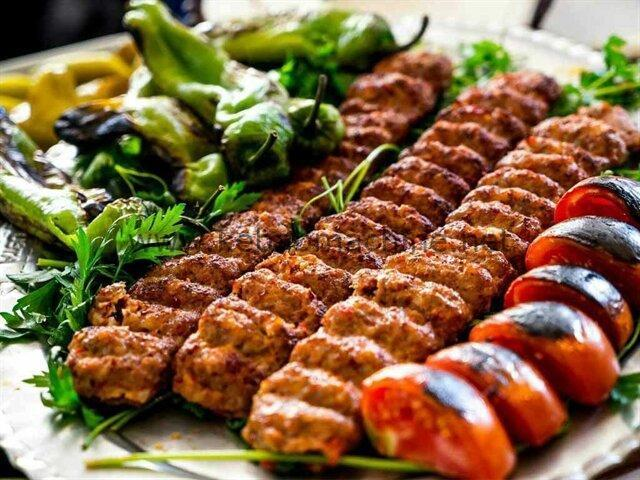

Kebab

Savor the Flavors of the Middle East with These Mouthwatering Kebab Skewers
Kebabs epitomize the essence of grilled perfection -
succulent morsels of marinated meat and vibrant vegetables threaded onto skewers.
Marinate your protein of choice in an aromatic blend of spices, herbs, and zesty marinades.
Alternately thread the marinated bites with colorful peppers, onions, and tomatoes.
Grill to sizzling perfection, achieving a delectable smoky char. Serve these flavorful
skewers with warm flatbread, cooling tzatziki,
and fresh herbs for a taste that transports you to the bustling markets of the Middle East.
Ingredients
- 1 cup whole-milk Greek yogurt
- 6 cloves garlic, minced
- 2 tablespoons olive oil
- 2 tablespoons freshly squeezed lemon juice,
or more to taste
- 2 tablespoons ketchup
- 1 tablespoon Aleppo red pepper flakes
- 1 tablespoon kosher salt
- 1 ½ teaspoons ground cumin
- 1 teaspoon freshly ground black pepper
- 1 teaspoon paprika
- ⅛ teaspoon ground cinnamon
- 2 ½ pounds boneless,
skinless chicken thighs, halved
- 4 long metal skewers
Steps
- Prepare the Marinade: In a shallow dish,
whisk together olive oil, lemon juice, minced
garlic, cumin, paprika, oregano, salt, and pepper
. Add your chosen protein (such as chunks of lamb
, beef, chicken, or shrimp) and toss to coat
evenly. Cover and marinate in the refrigerator
for at least 30 minutes,
or up to 2 hours for deeper flavor.
- Soak the Skewers: If using wooden skewers,
soak them in water for at least 30 minutes
to prevent them from burning on the grill.
- Thread the Kebabs: Remove the marinated
protein from the refrigerator. Thread
the pieces onto the skewers, alternating with
chunks of bell peppers, onions, cherry tomatoes,
or any other desired vegetables.
- Preheat the Grill: Prepare your grill
for direct grilling over medium-high heat.
- Grill the Kebabs: Place the threaded kebabs on
the preheated grill grates. Grill for 8-12
minutes, turning occasionally, until the meat is cooked through
and the vegetables are tender and lightly charred.